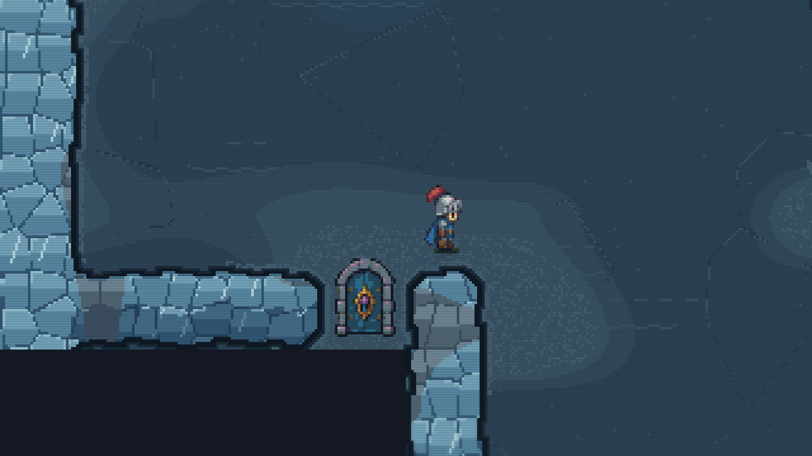
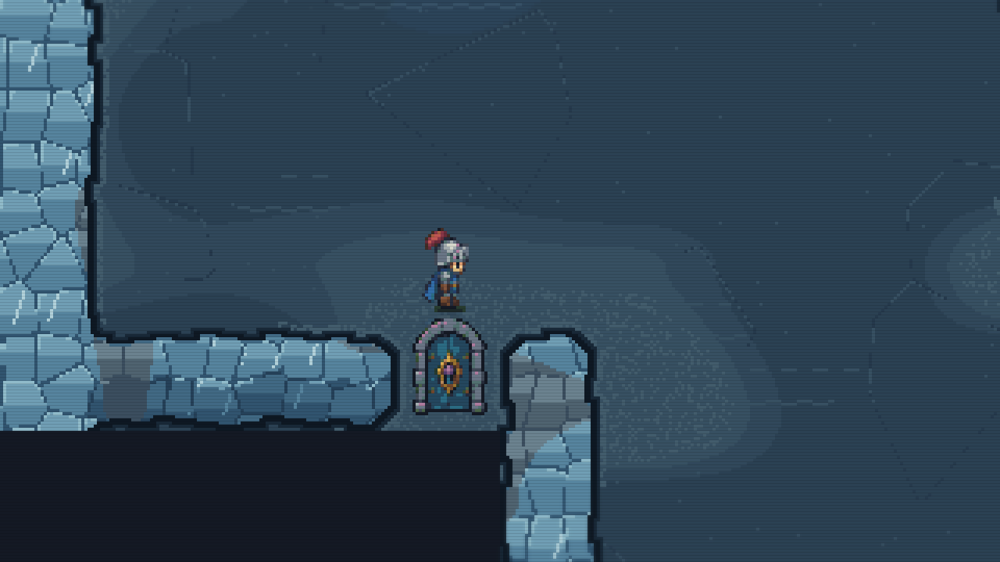
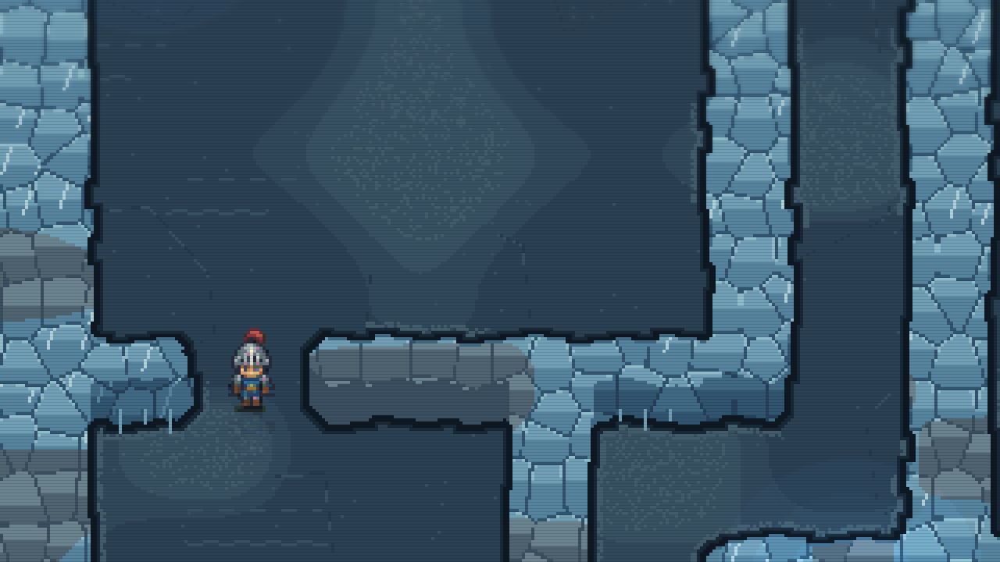
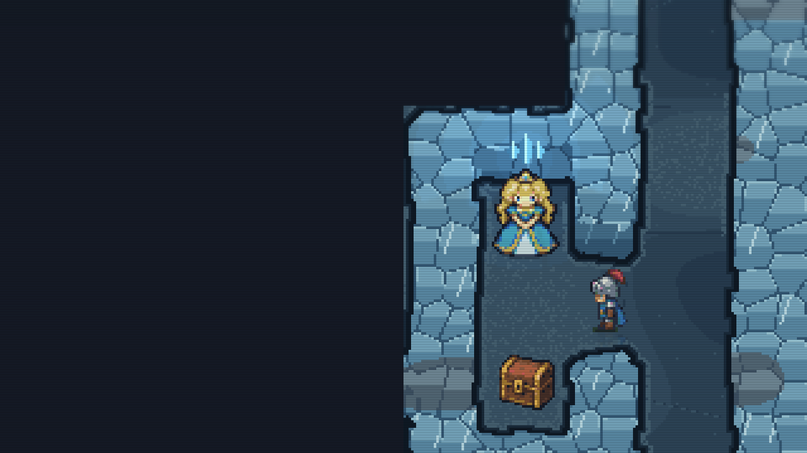
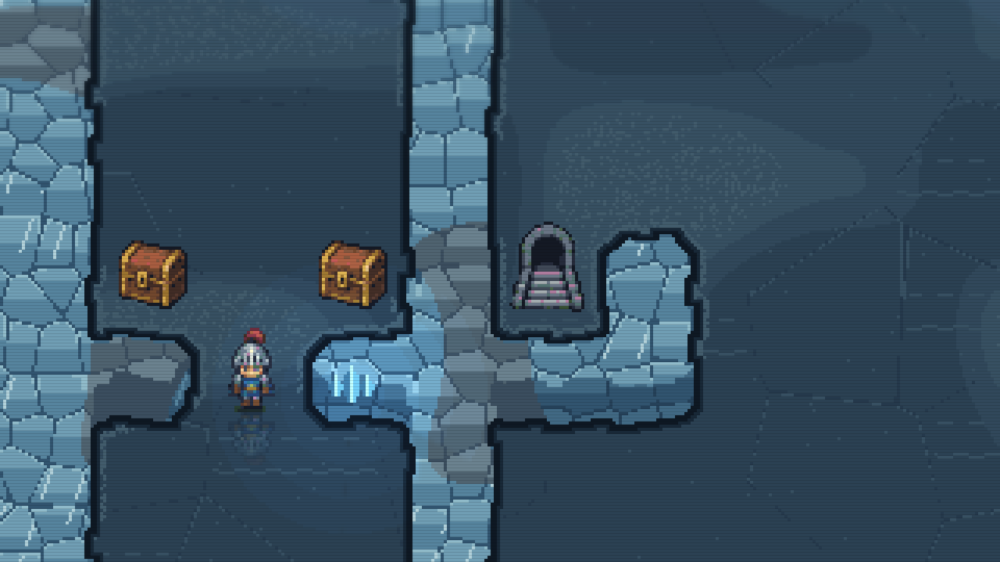

Near walls, doorways, stairs and room boundaries, each step now stops where you intend. The open floor still has its slower push-off, faster glide and one-tile braking.
The same one-tile input followed by release. Previously, the extra skid carried the character past the door.


Opened doorways retain the same traction. The original key requirements still apply.


